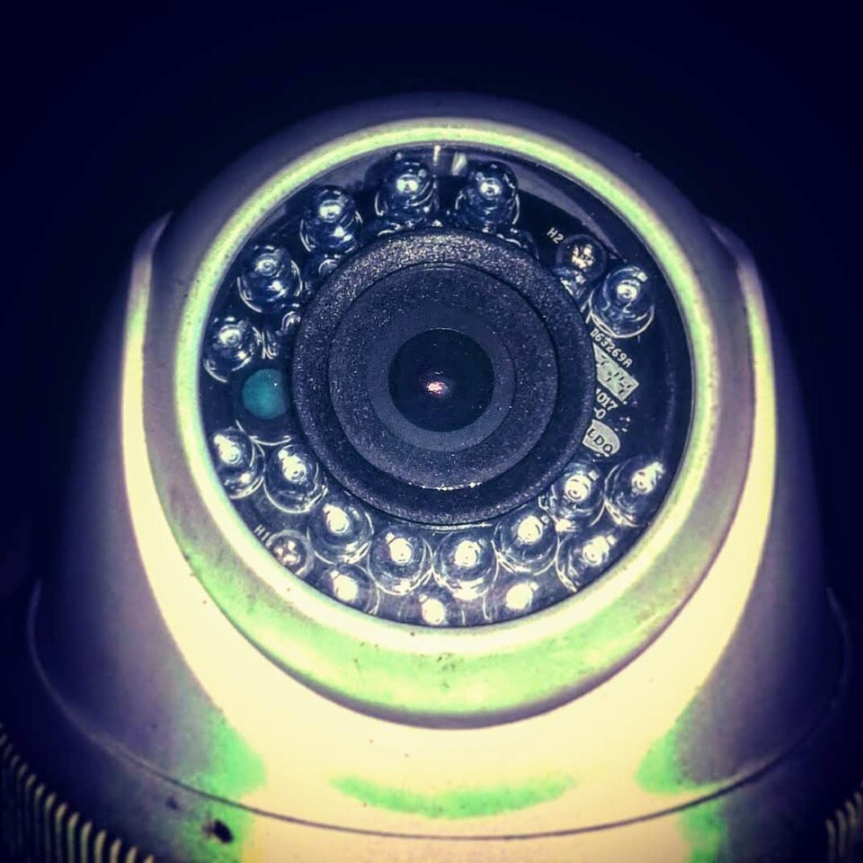
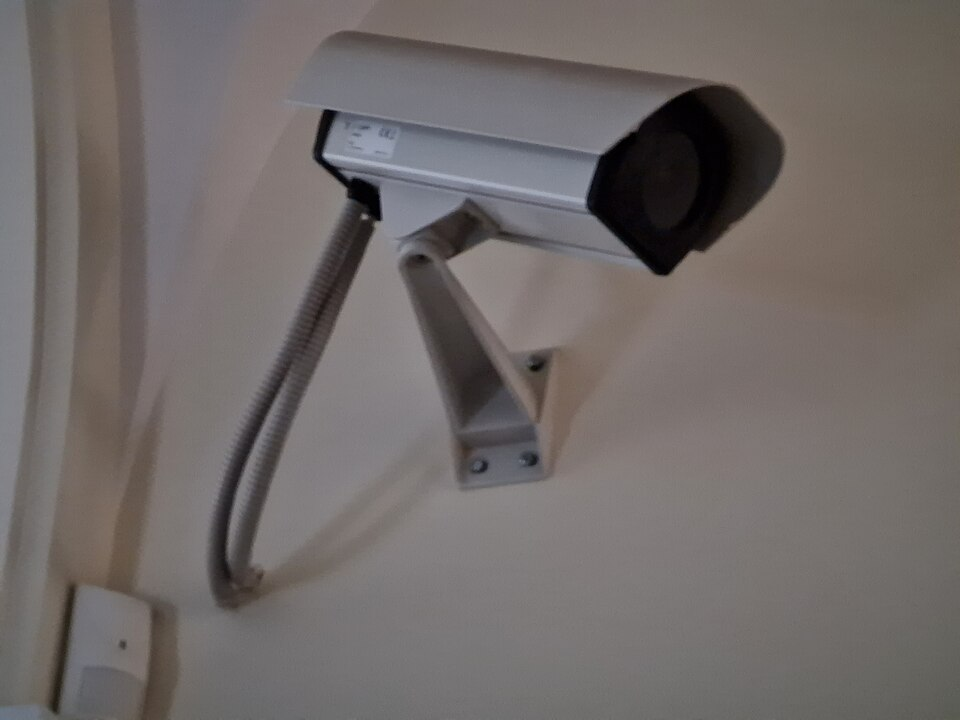

Entrada de datos Fuentes de video industrial


Clips MP4 de cámaras de planta.
Dataset de entrenamiento: video industrial público (CC BY 4.0), dos cámaras, conductas seguras e inseguras, con división oficial de entrenamiento y prueba.